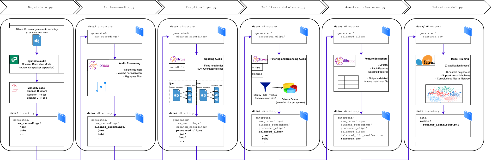
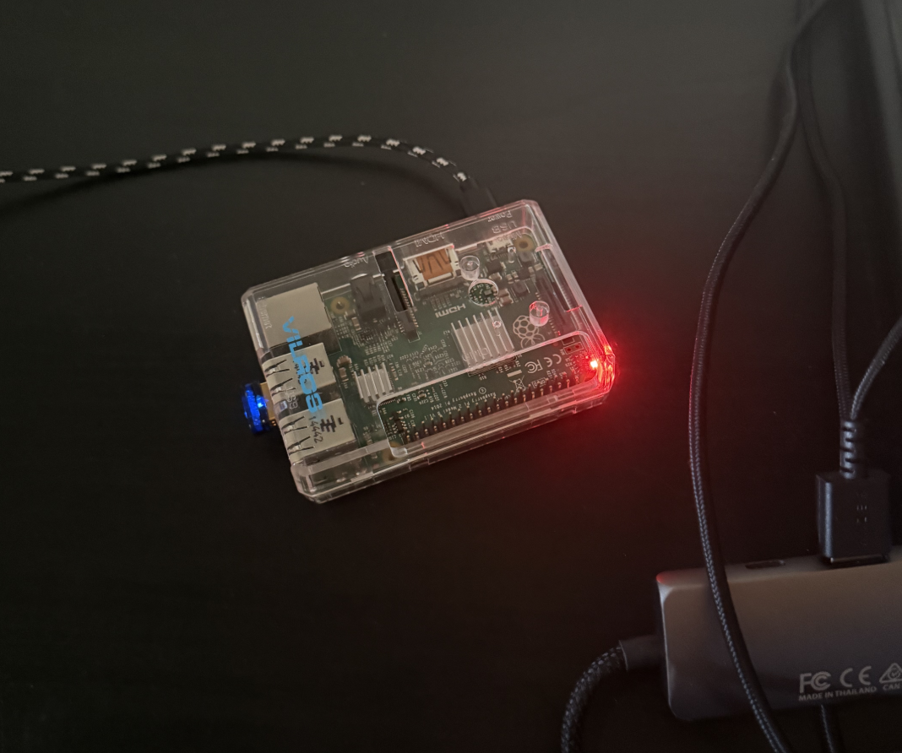
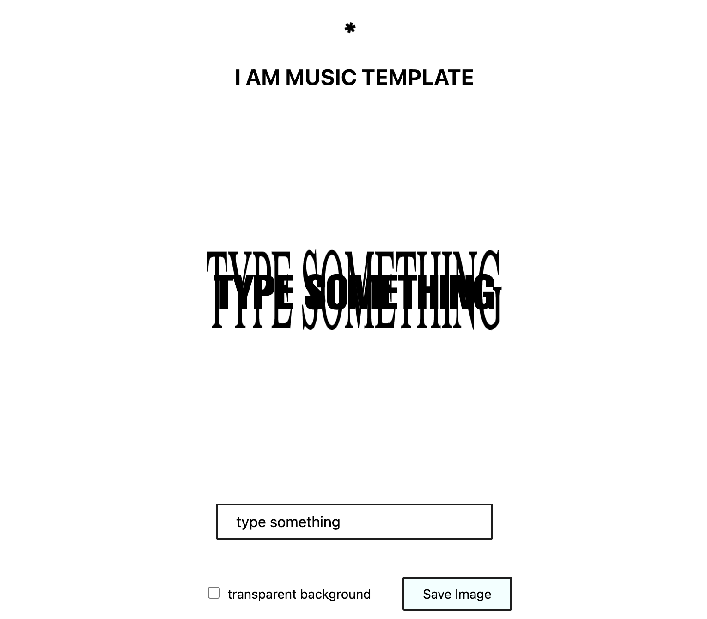
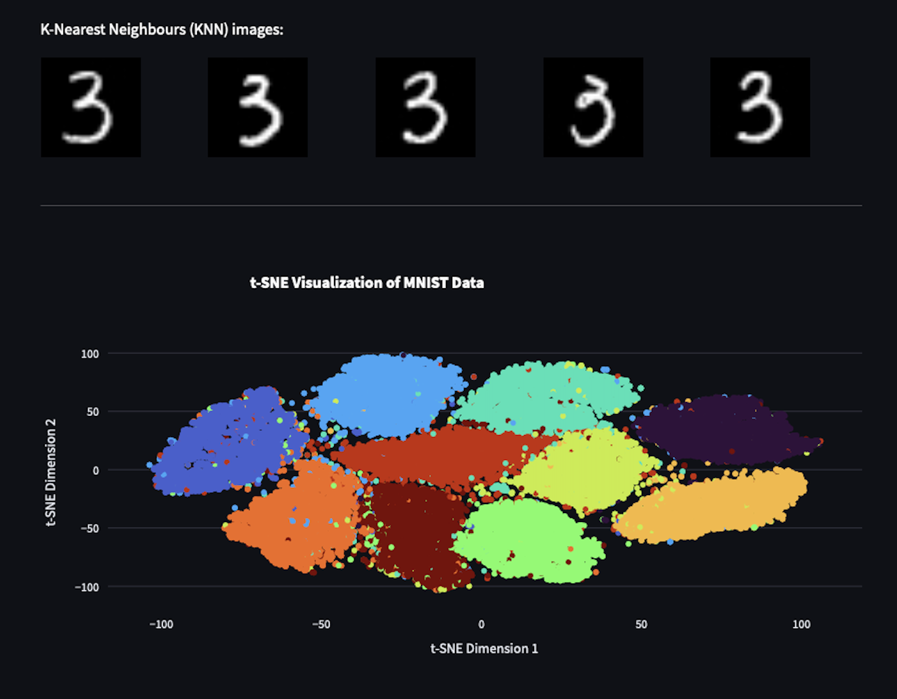

Marco Lanfranchi
Incoming Data Scientist I at Mastercard. Experience with database engineering, software development, and data science.
Experience
Work
Data Scientist I, Mastercard
Post-grad role working on ML infrastructure.
Database Engineer Intern, Samsung R&D Canada
Cloud Engineering team.
Data Analyst Intern, Nettwerk Music Group
Developed dashboards, data pipelines, and applied data science techniques analyzing global streaming data for hundreds of artists as part of the Analytics team at an independent record label.
Education
BSc in Data Science, Simon Fraser University
BA (transferred before completion), University of British Columbia
Open Source Contributions
Streamlit
Contributed to Streamlit, a popular open-source framework for building data and ML apps, by implementing tooltip support for st.badge().
Other Experience
Volunteer Jr. Data Scientist, Industrio AI
Contributed to the development of data applications for business clients, developing interactive visualizations with Python and JavaScript.
Research Associate, Dr. Matt Lowe, UBC School of Economics
Collaborated as an undergraduate research associate collecting data for one of Dr. Matt Lowe's research studies in behavioral economics.
Projects
lisa (Labeled Identification of Speech Audio)
ML model for speaker identification from audio clips. Pipeline includes data processing, audio cleaning, feature extraction, and model training. Also developed a demo interface that takes live audio input and identifies speakers.

spotify-history
Automated background service that archives your Spotify listening history in an SQLite db and emails daily summaries.

iammusic-template
Web app that lets users create custom versions of the 'I AM MUSIC' album cover. Reached over 250k visitors in one month and processed 500k+ submissions via a custom API and NoSQL cloud database.

written-digit-recognition
Interactive Streamlit app for handwritten digit classification, backed by a K-nearest neighbors model implemented from scratch in Python.

aita-predictor
A machine learning model that classifies r/AmItheA-hole Reddit posts using an ensemble of classifiers built on vector embeddings and large-scale PySpark text processing.